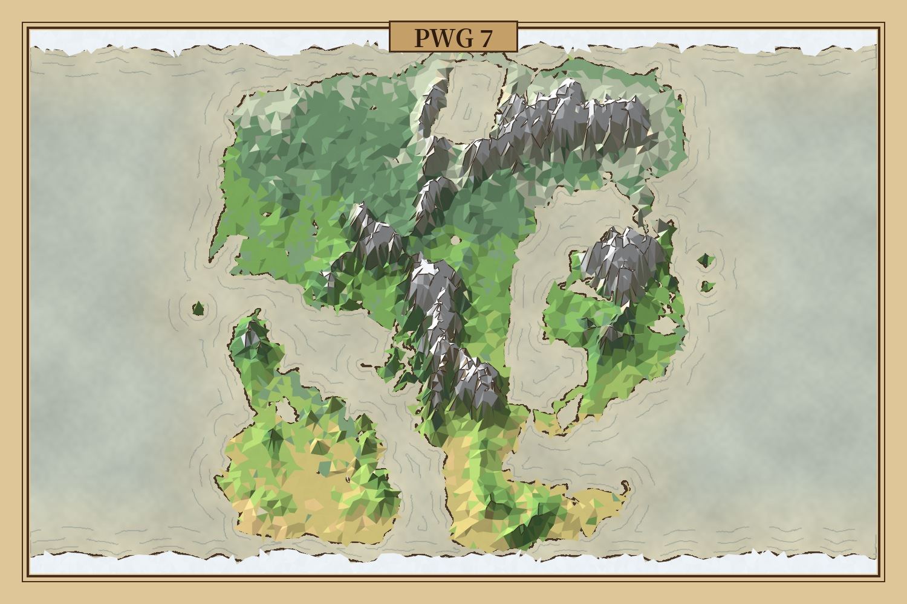
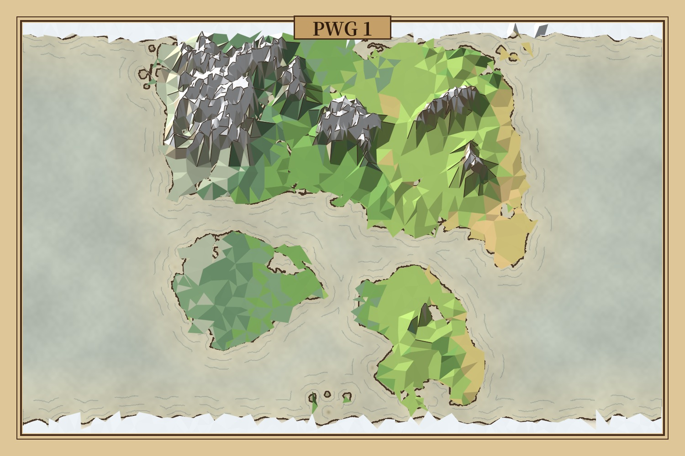
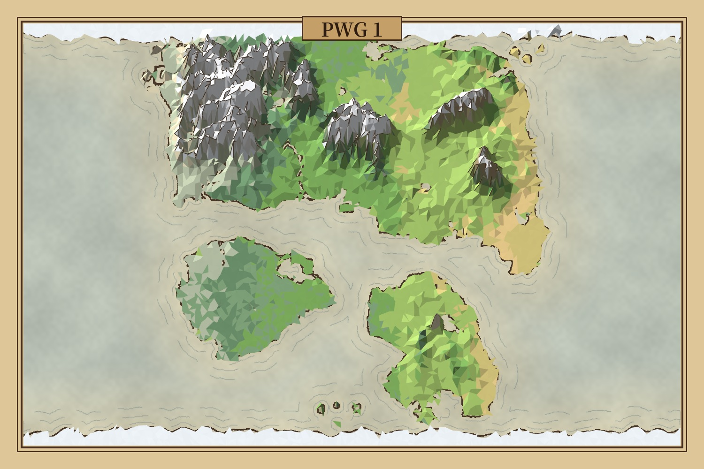

全体の強さは中間・目は2倍細かく・山の縁は中間(11-20)
概要: mapstyle39へのユーザー指示を、次のように数字にしました。各図は上=mapstyle39、下=今回。
- 地図全体の強さ: mapstyle38(0.45)と39(0.62)の中間=0.535。
- 地図全体の3Dの目の細かさ: 面の大きさを半分(低地の格子 26→13ピクセル)=目が倍の細かさ。
- 山の強さ: mapstyle38(強調2倍)と39(約1.55倍)の中間=約1.78倍。
- 山の縁: 山の範囲のまわり14ピクセルの帯の目を、低地の目と山の目の中間(約11ピクセル)にした。
- 山の範囲: 広くなり過ぎるため、山の集まりの判定を少し厳しく(0.12→0.17)して、出方を小さくした。
PWG seed7
 絵番号 E164
絵番号 E164

絵番号 E169
PWG seed5
 絵番号 E165
絵番号 E165
 絵番号 E170
絵番号 E170
PWG seed16
 絵番号 E166
絵番号 E166
 絵番号 E171
絵番号 E171
PWG seed4
 絵番号 E167
絵番号 E167
 絵番号 E172
絵番号 E172
PWG seed1

絵番号 E168

絵番号 E173
目で見た評価(各1枚)
- 低地の面が細かくなり、地図全体がなめらかに起伏して見える。大きな平らな面は減った。
- 山の範囲は狭くなり、山脈の形がはっきりした。山の縁は、低地と山の間が自然につながる。
- 面が細かくなったので、色の差が減り、前より絵がやわらかい印象になった。
限界・未確認
- 各1枚・目視のみ。iPhoneでの見え方は未測定。
- 「山の縁の3D」の指示は、「低地の目と山の目の中間の細かさにする」と解釈した。ご意図(縁の高さの強さなど)と違う場合は直す。
- 各数字は、指示の「中間」「少し」を私が数字にした値。
次: ご判断で、もう一段階調整するか、基準にするか決める。